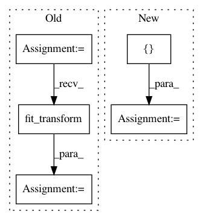

d04904cdd1df7afba9859868f4e487d3a2332070,demo_semiotic.py,,,#,6
Before Change
newsgroups_train = fetch_20newsgroups(subset="train", remove=("headers", "footers", "quotes"))
vectorizer = TfidfVectorizer()
tfidf_X = vectorizer.fit_transform(newsgroups_train.data)
corpus = st.CorpusFromScikit(
X=CountVectorizer(vocabulary=vectorizer.vocabulary_).fit_transform(newsgroups_train.data),
y=newsgroups_train.target,
feature_vocabulary=vectorizer.vocabulary_,
category_names=newsgroups_train.target_names,
raw_texts=newsgroups_train.data
).build()
semiotic_square = st.SemioticSquare(
corpus,
category_a="alt.atheism",
category_b="soc.religion.christian",
neutral_categories=["talk.religion.misc"]
)
html = st.SemioticSquareViz(semiotic_square).get_html(num_terms=5)
fn = "demo_semiotic_square_atheism_christianity.html"
open(fn, "wb").write(html.encode("utf-8"))
print("Open " + fn + " in Chrome or Firefox.")
After Change
scorer=st.LogOddsRatioUninformativeDirichletPrior(alpha_w=0.001)
)
html = st.produce_semiotic_square_explorer(semiotic_square,
jitter=0.01,
category_name="Fresh",
not_category_name="Rotten",
x_label="Rotten-Fresh",
y_label="Plot-Review",
neutral_category_name="Plot Description",
metadata=movie_df["movie_name"],
x_axis_values=[-2.58, -1.96, 0, 1.96, 2.58],
y_axis_values=[-2.58, -1.96, 0, 1.96, 2.58])
fn = "demo_semiotic.html"
open(fn, "wb").write(html.encode("utf-8"))
print("Open " + fn + " in Chrome or Firefox.")
In pattern: SUPERPATTERN
Frequency: 4
Non-data size: 5
Instances
Project Name: JasonKessler/scattertext
Commit Name: d04904cdd1df7afba9859868f4e487d3a2332070
Time: 2018-01-08
Author: jason.kessler@gmail.com
File Name: demo_semiotic.py
Class Name:
Method Name:
Project Name: rtavenar/tslearn
Commit Name: 7fe99a818f297f195ff6000d4a6ffecc6e7db774
Time: 2020-04-28
Author: romain.tavenard@univ-rennes2.fr
File Name: tslearn/docs/examples/metrics/plot_dtw.py
Class Name:
Method Name:
Project Name: alfredfrancis/ai-chatbot-framework
Commit Name: d68beca6f553622b92f2709cf984023dbf284e98
Time: 2016-12-23
Author: alfred.francis@pearldatadirect.com
File Name: core/intentClassifier.py
Class Name: IntentClassifier
Method Name: __init__
Project Name: glm-tools/pyglmnet
Commit Name: 0ce5a2bed019cd81f88a1c9c4b5eaeff971383e7
Time: 2018-08-27
Author: mainakjas@gmail.com
File Name: tests/test_pyglmnet.py
Class Name:
Method Name: test_glmnet